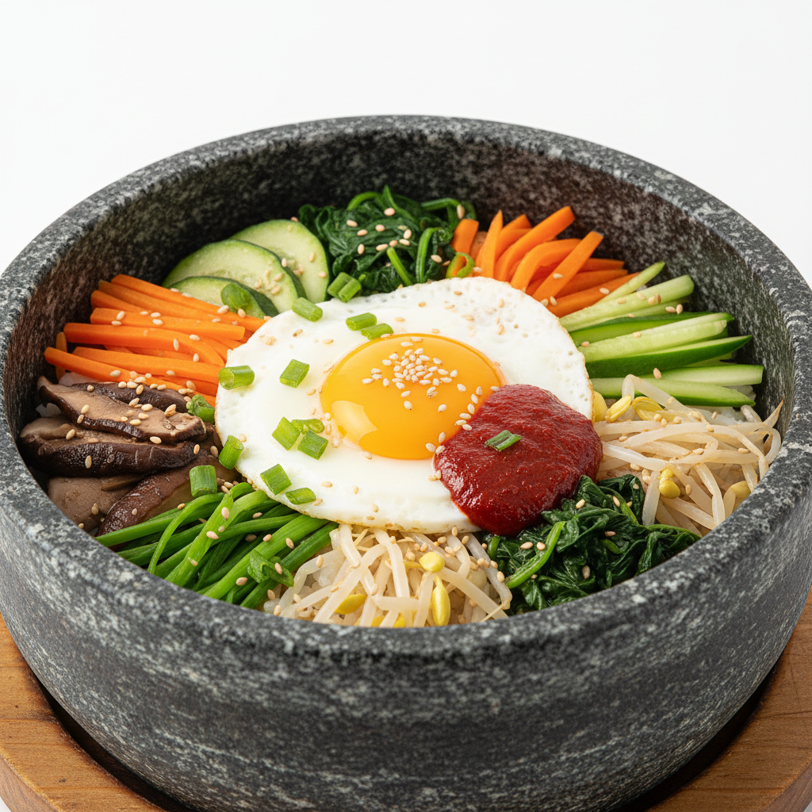
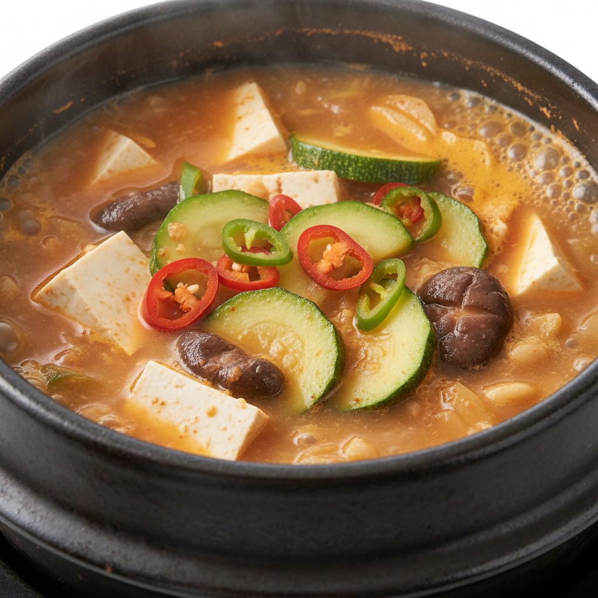
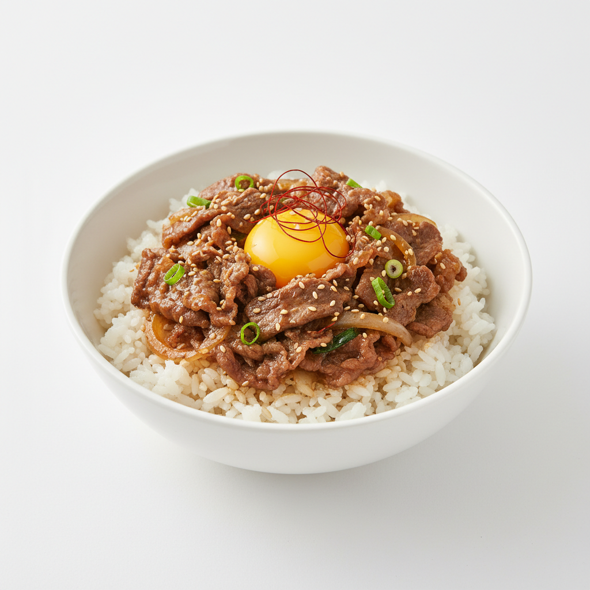
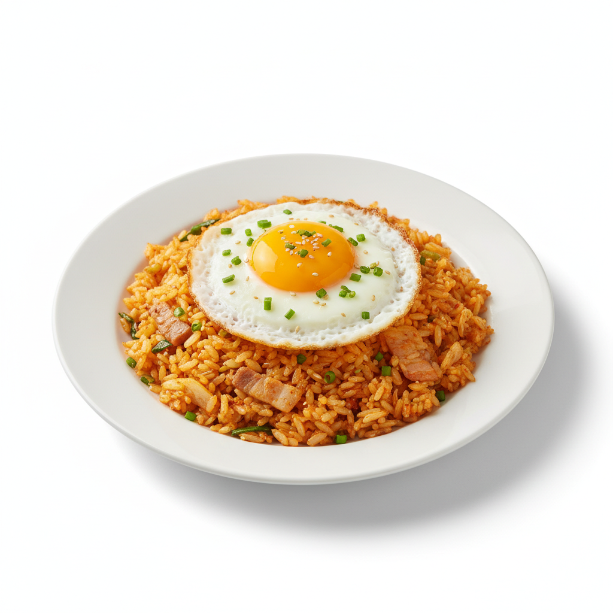
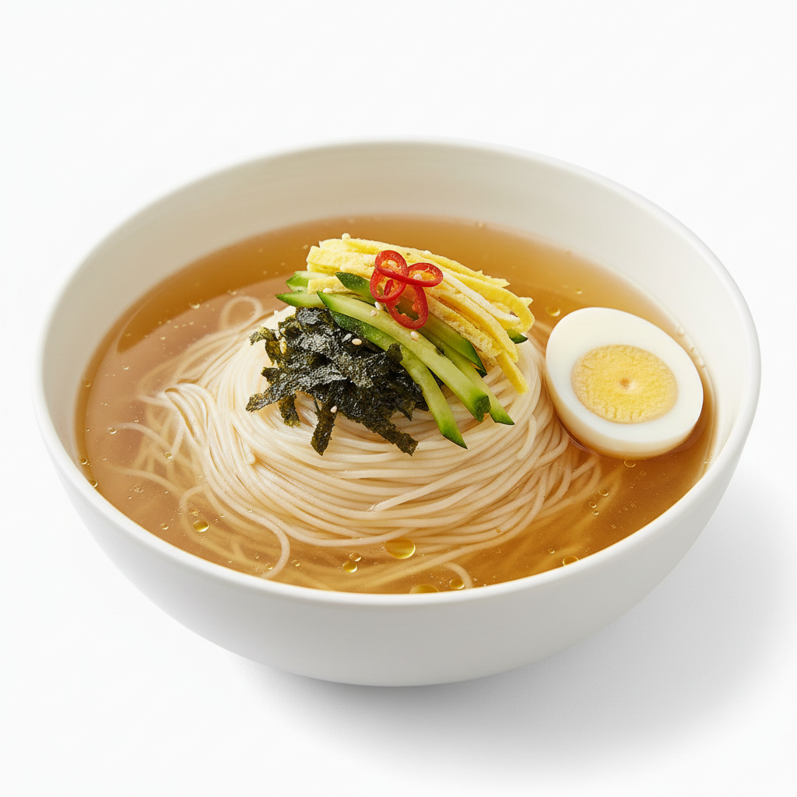
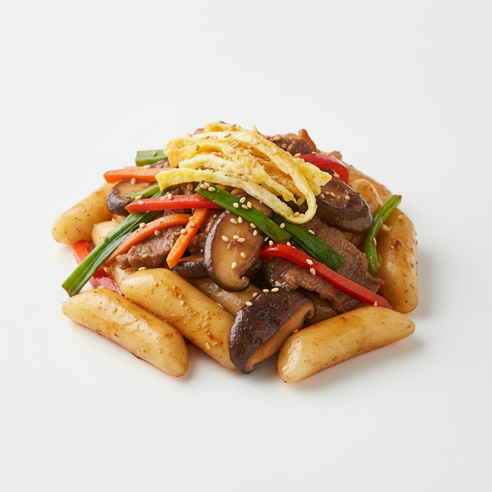
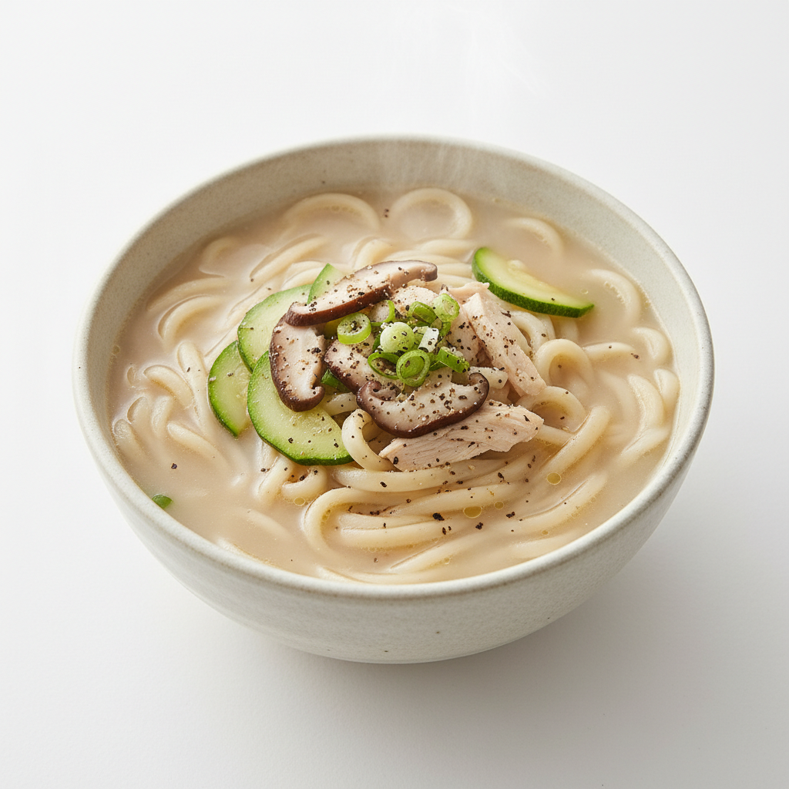
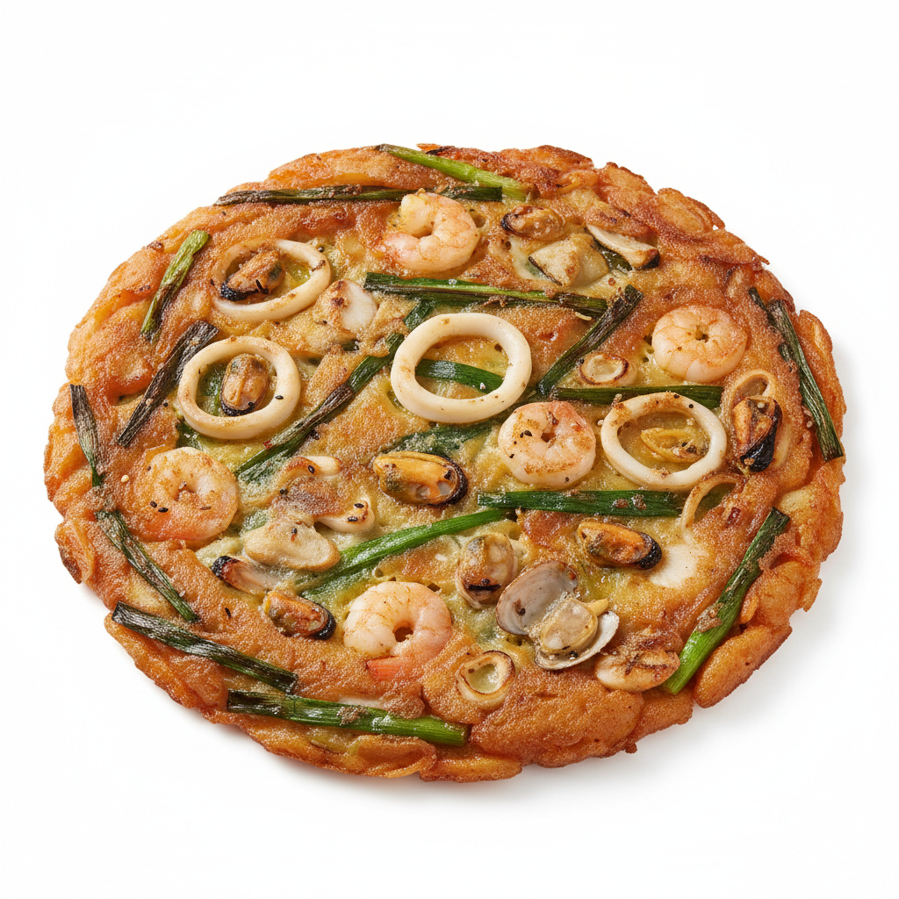
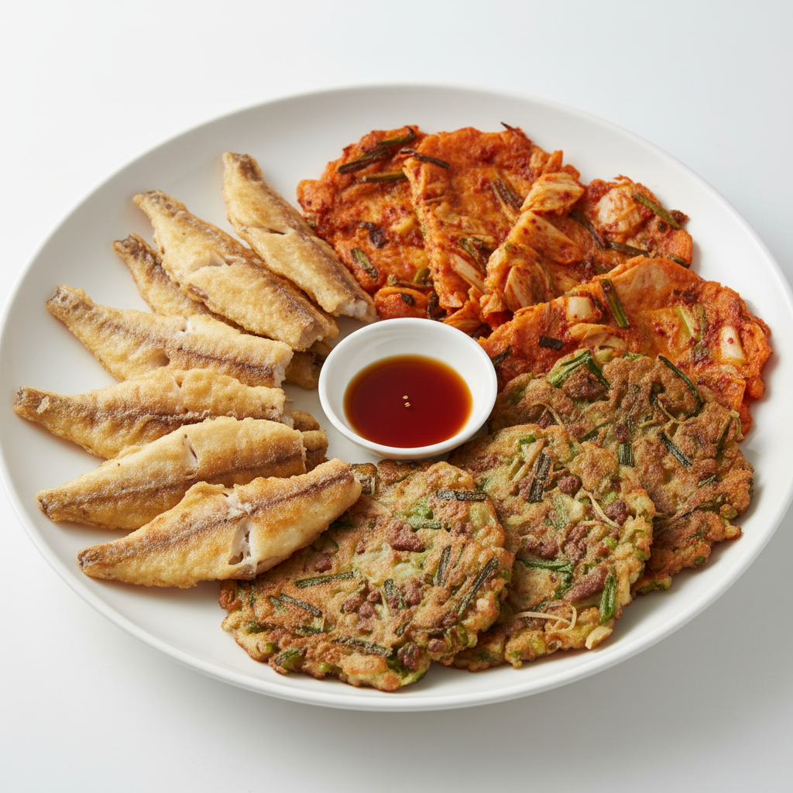
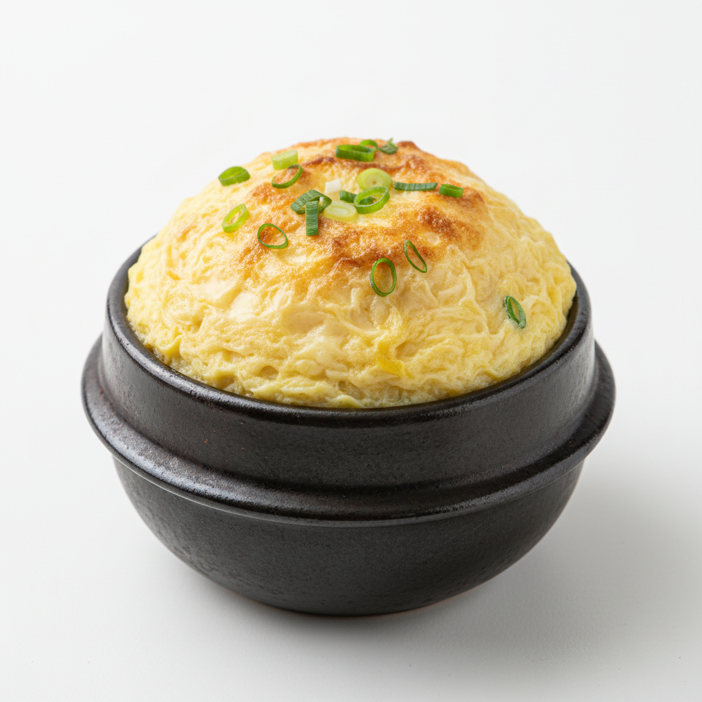

정식 / 밥
정성스레 차린 한 상
전주 비빔밥 - 12,000원

계절 나물과 고추장, 참기름의 조화. 돌솥 옵션 +2,000원
인기
된장찌개 정식 - 11,000원

직접 담근 된장으로 끓인 구수한 찌개와 반찬 5종
추천
불고기 덮밥 - 13,000원

달콤한 간장 양념 불고기를 갓 지은 밥 위에 듬뿍
인기
김치볶음밥 - 9,000원

묵은지로 볶아낸 고소한 볶음밥, 계란 프라이 포함
매운맛
면 / 분식
따끈한 한 그릇의 위로
잔치국수 - 8,000원

맑은 멸치 육수에 소면, 호박, 계란지단을 올려
추천
궁중 떡볶이 - 10,000원

간장 베이스의 궁중식 떡볶이, 버섯과 채소 가득
신메뉴
손칼국수 - 9,500원

직접 반죽하여 썬 면발, 진한 사골 육수
해물파전 - 14,000원

신선한 해물과 대파를 듬뿍 넣어 바삭하게
인기
반찬 / 사이드
곁들이면 더 풍성한 한 상
모듬 전 - 16,000원

동태전, 김치전, 녹두전 세 가지 맛을 한 접시에
뚝배기 계란찜 - 5,000원

보글보글 뚝배기에 담긴 부드러운 계란찜
추천
음료 / 차
식후 한 잔의 여유
- 쌍화차 - 6,000원
- 대추차 - 5,500원
- 유자차 - 5,500원
- 매실차 - 5,000원
- 식혜 - 4,500원
- 수정과 - 4,500원
- 아메리카노 - 4,000원
- 카페라떼 - 4,500원
안내 사항
- 모든 메뉴는 주문 후 조리되어 신선하게 제공됩니다
- 밥은 무료로 리필 가능합니다
- 알레르기 유발 식품이 포함될 수 있으니 직원에게 문의해주세요
- 단체 예약(10인 이상)은 전화로 문의 바랍니다
- 포장 주문 시 용기 보증금 1,000원이 추가됩니다